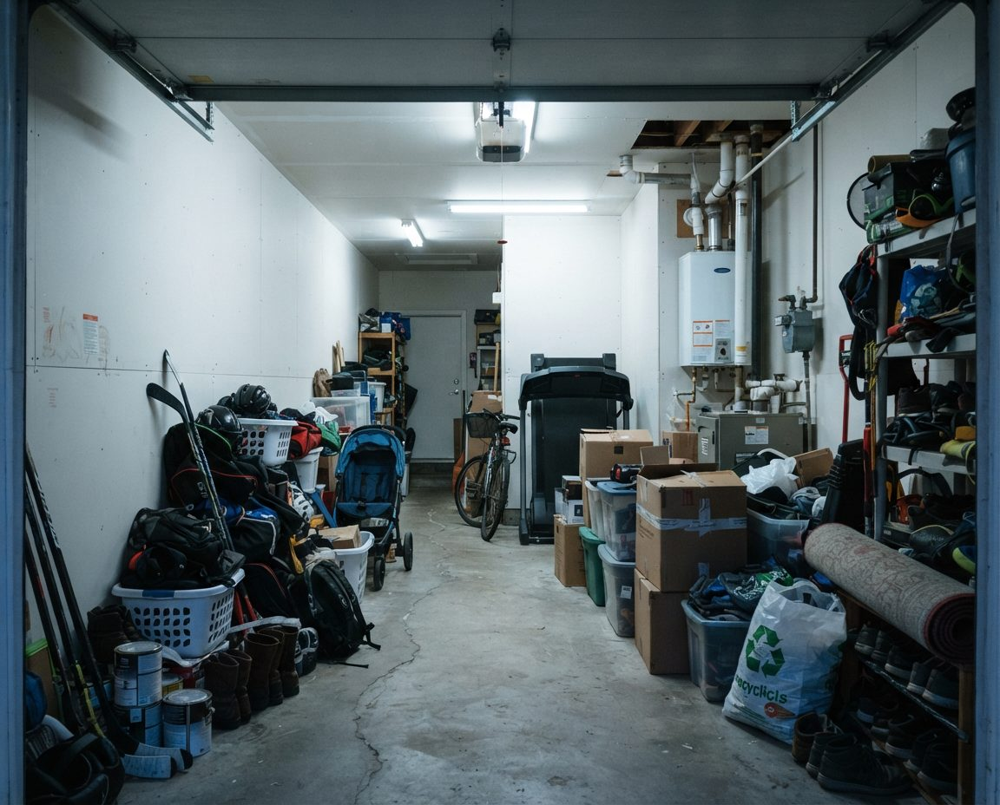
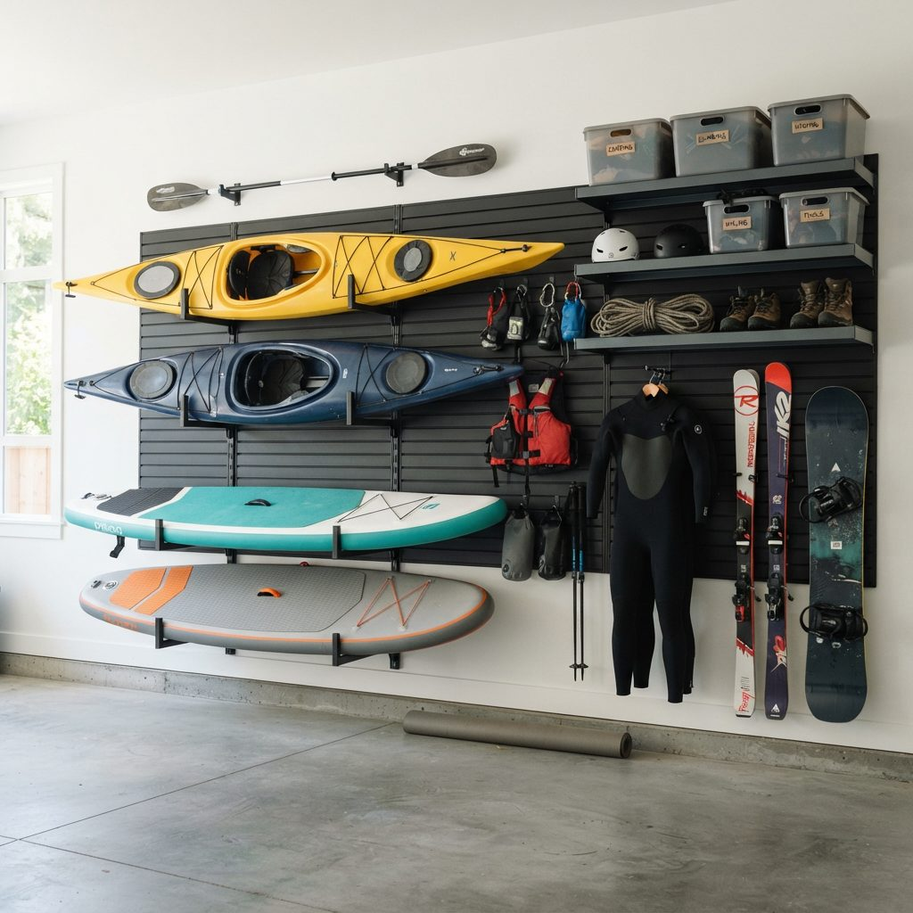
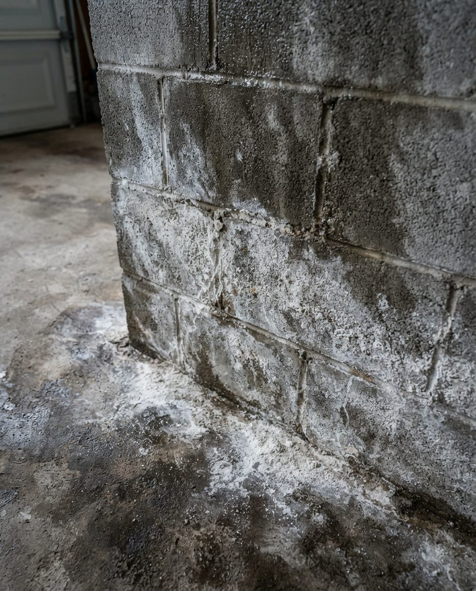
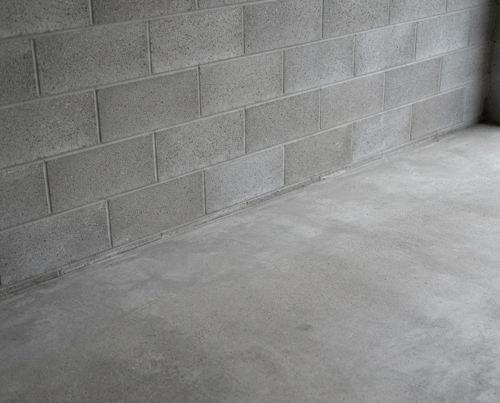
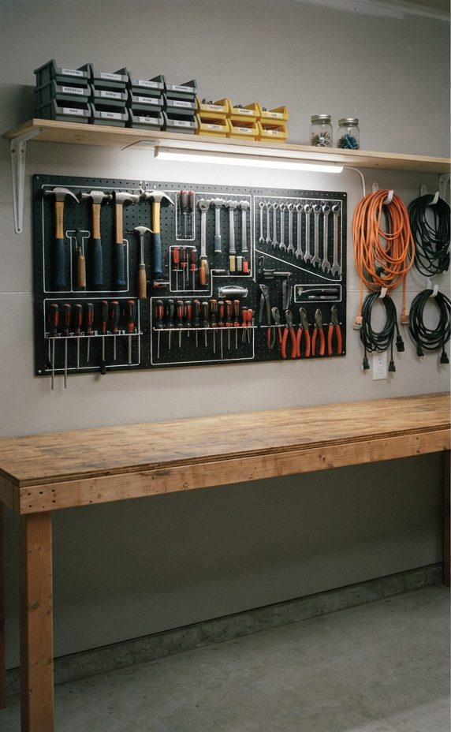

Garage Organization Systems and Where Each One Goes
There is no single garage organization system that suits every wall. A garage that works has three or four kinds of storage, each matched to what it holds and to the space beside the car. We pick them after measuring, from more than one supplier, and quote the hardware at cost.
| System | What it holds | Where we put it | What we check first |
|---|---|---|---|
| Wall track with hooks and baskets | Bikes, rakes and shovels, helmets, PFDs, hoses, fishing rods | The side wall beside the car, knee height and up | Stud locations, and strata approval in a townhouse |
| Ceiling hoists and cradles | Kayaks, canoes, paddleboards, roof boxes | Above the hood or along one side of the ceiling | Ceiling height, joist direction and the path of the garage door |
| Overhead racks | Tents, coolers, holiday boxes, luggage | Above the garage door track or the back of the stall | Load rating and clearance for a raised tailgate |
| Steel shelving | Sealed bins, paint, bulk supplies | The back wall, lowest shelf off the slab | Depth. Anything past about 60 cm eats the walkway. |
| Closed cabinets | Chemicals, fuel accessories, power tools | Beside the bench or the house door | Legs or a wall cleat so the base stays dry |
The first thing we do on site is chalk the parking envelope on the floor: the width of your vehicle, both doors open, and a clear line to the house door. Storage gets the space that is left. Done the other way round, a shelf ends up exactly where a door needs to swing.

Labels you can read standing upAn example layout, not a photo of a Maple Ridge client's garage. Each bin is labelled on two faces and listed on a written zone map, so anyone in the house can put things back.
Maple Ridge and Pitt Meadows Garages by Area
Maple Ridge stretches from the Pitt River boundary east past Whonnock, and its housing changes a lot across that distance. These are the garage types we plan for most often.
| Area | What we usually find | What the plan focuses on |
|---|---|---|
| Albion | Newer developments in the southeast with houses, townhomes and condos. Townhouse garages are often tandem or narrow. | One parkable stall, storage up the walls, strata rules respected. |
| Silver Valley | Forested area north of the Alouette River, mostly detached houses and townhomes, with trails close by. | Bike, hiking and paddling gear that comes home wet. |
| Hammond and the older southwest | Older homes and heritage buildings near the Fraser. | Damp wall bases, older framing and decades of contents. |
| Haney, Cottonwood and Thornhill | Established family neighbourhoods with attached doubles. | A full sort first, then a perimeter layout for two cars. |
| Whonnock, Websters Corners and the rural east | Acreages and horse properties with barns and detached shops. | Machinery positions, tack and feed storage, phased work. |
| Pitt Meadows | A smaller city between the Pitt River and Maple Ridge, with suburban homes surrounded by farmland and dykes. | Family doubles, bikes for the dyke trails and garden equipment. |
Albion and Silver Valley Townhouse Tandems
Much of the newer housing in Albion and Silver Valley is townhomes, and the garage is often tandem: one car in front of the other. Within a year of moving in, the back stall tends to become the storage room and the second car moves to the visitor parking or the street.
We split a tandem into two zones. The front stall is for the car and nothing lives on its floor. The back half gets shelving on both side walls, with a centre aisle wide enough to carry a bin down, and the deepest items go against the back wall. Seasonal things move to an overhead rack above the front stall, where they are out of the way for ten months.


Two zones, one aisleAn example layout, not a photo of a Maple Ridge client's garage. The front stall stays empty for the car and the back half becomes shelving you can walk between.
Read the strata bylaws before anything is drilled
Many strata corporations limit what owners can fasten to a wall shared with the next unit, and some require the garage to stay usable for parking. Send your bylaws with the quote request. Where drilling is not allowed, we use freestanding shelving, braced and levelled, and keep the storage clear of the stall.
Storing Gear for Golden Ears, Alouette Lake and the Dykes
The City of Maple Ridge describes Golden Ears as one of the largest parks in the province. Park guides list more than 20 km of cycling trails and about 20 km of horse trails there, and canoeing and kayaking on Alouette Lake are among the park's most popular uses. Closer to home, the dyke trails along the Fraser and Pitt Rivers carry riders, walkers and horses. That shows up in local garages as mountain bikes, a canoe or two kayaks, PFDs and paddles, a tent, a cooler and a dog crate, all competing for one wall.
Boats go on the ceiling. A hoist lifts a kayak or paddleboard flat above the hood, or wall cradles hold it on edge along one side if the ceiling is low or the door track is in the way. Bikes hang vertically on wall track at staggered heights, so four bikes fit on about a metre and a half of wall. PFDs, helmets and wet gear hang on open hooks where they can drip and dry, never folded into a bin. Camping gear that comes out a few weekends a year goes into labelled bins on an overhead rack.

Hang it so it can dryAn example layout, not a photo of a Maple Ridge client's garage. Gear that comes home wet from a ride or a paddle goes on open hooks first and into bins only once it is dry.
If bikes are most of the problem, our page on garage bike storage covers vertical racks, ceiling lifts and e-bike charging in more detail.
Older Garages in Hammond and Around Haney
Hammond, in the southwest of the city near the Fraser, is known for older homes and heritage buildings. Garages there and in the older blocks around Haney can be single, detached or built with bare stud walls, and the concrete is often old enough to show white mineral bloom where moisture moves through it.


Fix the wall before you load itAn example layout, not a photo of a Maple Ridge client's garage. White bloom on concrete means water is moving through it. We clean it, then keep shelving off that wall or leave an air gap behind it.
Before we hang anything in an older garage, we find out what the wall is. Bare studs take wall track well. Panelling over unknown framing does not, so we locate the studs or switch to freestanding shelving. Stained or mouldy wall bases are treated first, and our page on mould in a garage explains what we look for. If the garage holds forty years of contents, the job starts with garage decluttering, and the system goes in once the floor is visible.
Keeping Stored Things Dry Through a Wet Winter
November is the wettest month in Maple Ridge, and the rain runs from fall into spring. An unheated garage sits near outdoor humidity from October to March, and the slab stays cold and slightly damp the whole time.
Cardboard fails from the bottom upAn example layout, not a photo of a Maple Ridge client's garage. Boxes on a slab wick moisture, and photos, books, fabric and paper labels go next.
Three rules handle most of it. Everything that matters goes into sealed plastic bins. The lowest shelf sits off the floor, high enough that a wet slab or a leaking door seal never reaches it. Anything fixed to an outside wall gets an air gap behind it. In a damp garage we specify galvanized or powder-coated steel shelving, because bare steel rusts at the feet.
Horse Properties and Acreage Shops
Maple Ridge has equestrian trails running through the city, many of them built with the Haney Horsemen Association. On horse properties in Whonnock and the rural east, the barn and the shop hold saddles and bridles, blankets, feed, fencing wire and posts, a ride-on mower, a tractor or quad, and the parts and tools for all of it.
We plan these buildings by weight and by how often things are used. Machinery gets a fixed parking position with a clear route to the door. Feed goes into sealed containers off the floor, away from fuel and chemicals. Tack hangs on saddle and bridle racks in the driest corner. Small parts go into labelled drawers beside the bench. Big buildings are quoted on site and done one zone per visit, so the property keeps running while we work.


A bench you can work onAn example layout, not a photo of a Maple Ridge client's shop. Tools go on the wall above the bench and parts into labelled drawers, so the top stays clear for repairs.
Where the Rest Goes
Every organizing job leaves a pile of things that are not staying. If decluttering is in your quote, we sort and remove it. If you would rather do that part yourself, these are the local options.
- Ridge Meadows Recycling Depot, 10092 236 Street. The City lists electronics, small and large appliances, motor and cooking oil, styrofoam, textiles, batteries, light bulbs and scrap metal. Its Return-It listing also says it collects household paint and aerosols through Product Care.
- Maple Ridge Recycling and Waste Centre. Metro Vancouver's site next to the depot takes garbage, and it sends batteries, electronics and small appliances over to the depot.
- Before you load the car. Hours and accepted items change. Check mapleridge.ca, or pittmeadows.ca if you live in Pitt Meadows, before you drive over.